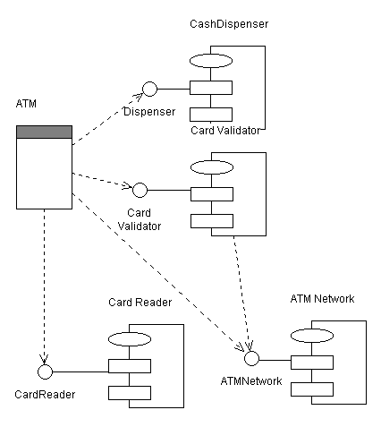
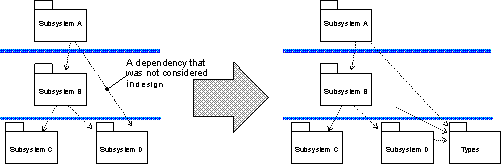
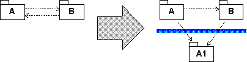

Roles and Activities >
Developer Role Set >
Roles and Activities >
Developer Role Set >
 Software Architect >
Software Architect >
 Structure the Implementation Model
Structure the Implementation Model
Roles and Activities >
Developer Role Set >
Software Architect >
Structure the Implementation Model
Activity:
| |||||||||||||||||||||
Purpose
|
|
| Steps | |
| Input Artifacts: | Resulting Artifacts: |
| Role: Software Architect | |
| Guidelines: | |
| Tool Mentor: | |
| Workflow Details: |
Purpose
|
In moving from the 'design space' to the 'implementation space' start by mirroring the structure of the Design Model in the Implementation Model.
Design Packages will have corresponding Implementation Subsystems, which will contain one or more components and all related files needed to implement the component. The mapping from the Design Model to the Implementation Model may change as each Implementation Subsystem is allocated to a specific layer in the architecture. Note that both classes and possibly design subsystems in the Design Model are mapped to components in the Implementation Model - although not necessarily one to one (see Concept: Mapping from Design to Code and Artifact: Design Subsystem).
Create a Component Diagram to represent the Implementation Model Structure. A simple Component Diagram is shown below:

Example Component Diagram for a simple Automated Teller Machine
Purpose
|
Decide whether the organization of subsystems needs to be changed, by addressing small tactical issues related to the implementation environment. Below are some examples of such tactical issues. Note that if you decide to change the organization of implementation subsystems you must also decide whether you should go back and update the design model, or the allow design model to differ from the implementation model.
Example
You extract some type declarations from Subsystem D, into a new subsystem Types, to make Subsystem A independent of changes to the public (visible) components in Subsystem D.

Type declarations are extracted from Subsystem D
.

Components are extracted from subsystem A, and placed in a new subsystem A1.
Purpose
|
For each subsystem, define which other subsystems it imports. This can be done for whole sets of subsystems, allowing all subsystems in one layer to import all subsystems in a lower layer. Generally, the dependencies in the Implementation Model will mirror those of the Design Model, except where the structure of the Implementation Model has been adjusted (see Adjust implementation subsystems).
Present the layered structure of subsystems in component diagrams.
Executables (and other derived objects) are the result of applying a build process to an implementation subsystem (or subsystems) or a part thereof, and so logically belong with the implementation subsystem. However, the software architect, working with the configuration manager, will need to decide the configuration item structure to be applied to the implementation model.
For ease of selection and reference, particularly for deployment, the default recommendation is to define separate configuration items to contain the sets of executables that are deployable. Thus, in the simple case, for each implementation subsystem there would be a configuration item for the deployable executables and a configuration item to contain the source etc. used to produce them. The implementation subsystem can be considered to be represented by a composite configuration item containing these configuration items (and perhaps others, such as test assets).
From a modeling point of view, a collection of executables produced by a build process can be represented as an Artifact: Build (which is a package) contained within the associated implementation subsystem (itself a package).
Purpose
|
In general, test components and test subsystems are not treated much differently in the Rational Unified Process from other developed software. However, test components and subsystems do not usually form part of the deployed system, and often are not deliverable to the customer. Therefore the default recommendation is to align the test assets with the target-of-test (e.g. component for unit test, implementation subsystem for integration test, system for system test) but keep the test assets in, for example, separate test directories, if the project repository is organized as a set or hierarchy of directories. Distinct test subsystems (intended for testing above the unit test level) should be treated in the same way as other implementation subsystems - as distinct configuration items.
For modeling, a collection of test components can be represented as an Artifact: Implementation Subsystem (a package). For unit test, such a test subsystem would normally be contained within the associated (tested) implementation subsystem. The software architect, in consultation with the configuration manager should decide whether test components at this level should be configured together with the components they test, or as separate configuration items. For integration and system test, the test subsystems may be peers of the implementation subsystems under test.
Purpose
|
The Implementation View is described in the "Implementation View" section of the Software Architecture Document. This section contains component diagrams that show the layers and the allocation of implementation subsystems to layers, as well as import dependencies between subsystems.
|
Rational Unified
Process
|